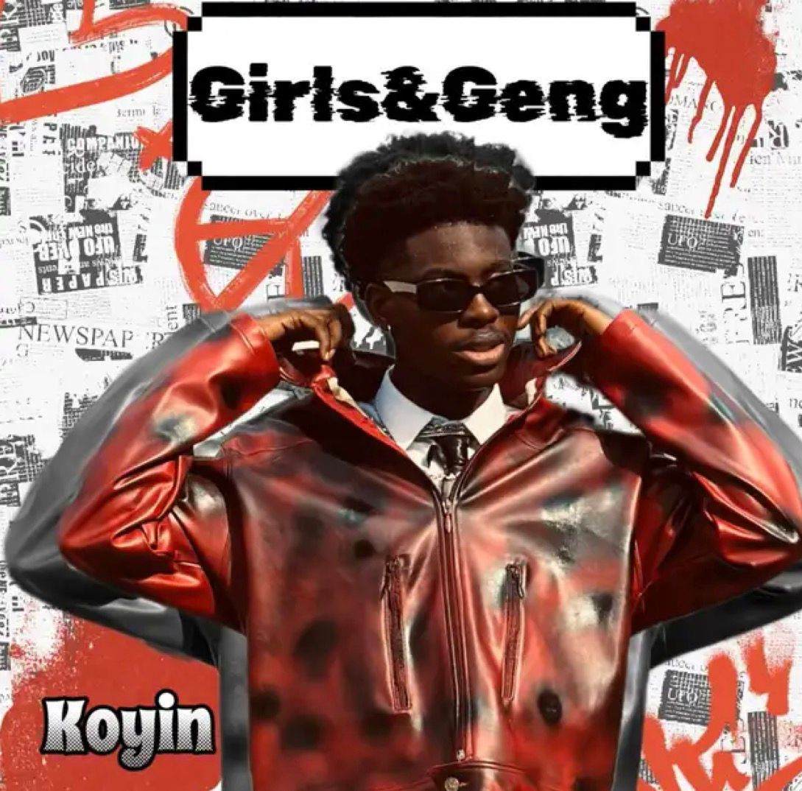

Name
Koyinsola Samod Sanusi
Koyinsola Samod Sanusi (“Koyin”) is a Lagos-raised Nigerian model and recording artist. Known to fans as the Diamond of the Season, he blends stagecraft with camera poise—moving seamlessly between editorial frames, brand films, and music.
In 2025, Koyin finished as second runner-up (Top 3) on Big Brother Naija Season 10. He was widely celebrated as the season’s “last man standing,” entering early and exiting at the grand finale—proof of staying power and audience pull.
Koyin’s first training ground was movement. Before the spotlight of reality TV, he racked up years on set as a dancer and performer, building timing, blocking, and stamina—the same control you now see in editorial work and music performance. As modeling opportunities scaled, he layered fashion, acting, and recording into a single lane: culture with commercial read.
Koyinsola Samod Sanusi
Nigeria (Lagos-raised; roots in Ogun State)
22 (born 19 Aug 2003)
Second runner-up (Top 3)
“Last man standing”
Calm under lights. Camera-ready notes.
The season placed a national lens on what directors and stylists already saw in smaller rooms: an easy set presence, a look that holds frame, and the ability to sustain audience interest week after week.

Runway discipline meets camera intuition. The result: usable takes early, strong posture in tight frames, and a read that lands across fashion, film, and music-led campaigns. With five-plus years of creative work behind the lens and in front of it, the taste level and reliability travel.
Movement first — dance & performance, then modeling and on-camera roles.
Post-BBNaija Top 3, building music releases and brand collaborations; active on set and on stage.
Taste-led work with measurable lift—editorial campaigns, brand films, and records with live read.
For brand films, editorial campaigns or music-led moments, reach the bookings team. Long-term partnerships welcome.